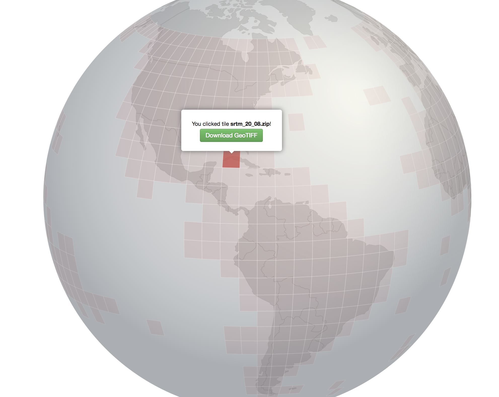

In addition to surface reflectance data (Landsat, Sentinel2, RapidEye) the madmex system requires ancillary data to generate its outputs.
If you have a high quality local/national DEM available, use it. If not SRTM is a freely available 90m resolution (nearly) global DEM.
SRTM tile grabber makes identifying and downloading SRTM tiles for a given area easy.
Several tiles may be required to cover the entire study area; they have to be mosaicked
Navigate to the folder where SRTM tiles were downloaded and run the command below.
file_list=$(ls *zip|sed -n 's/\(.*\).zip/\/vsizip\/\1.zip\/\1.tif/g;p'|tr -s '\n' ' ')
gdal_merge.py -o srtm_mosaic.tif $file_list
A new file (srtm_mosaic.tif) should have been created. You can open it in QGIS for inspection.
Slope and aspect can be easily generated using the gdaldem command line utility.
gdaldem slope srtm_mosaic.tif slope_mosaic.tif -s 111120
gdaldem aspect srtm_mosaic.tif aspect_mosaic.tif
The -s 111120 parameter is used to correct for the unit difference between horizontal distance (in degrees in the case of SRTM) and the vertical distance (in meters)
These files can also be inspected in qgis
Once generated these products need to be placed in the appropriate madmex project directory (e.g.: $madmex_root/data/aux/dem) and registered in the configuration file.
GADM provides administrative boundary data for every countries of the world.
One simply needs to know the ISO code of the country of interest, and the data can be downloaded and extracted with the following commands
# DOwnload and extract the administrative boundary data of Mexico
ISO=JAM
wget http://data.biogeo.ucdavis.edu/data/gadm2.8/shp/${ISO}_adm_shp.zip
unzip -j "${ISO}_adm_shp.zip" "${ISO}_adm1.*" -d "/home/madmex_user/madmex/data/aux/borders"
ISO=JAM
ip_container=$(docker inspect postgres-server-madmex|grep IPAddress\"|head -n 1 | cut -d":" -f2 | cut -d"\"" -f2)
docker run -e ip_container=$ip_container --rm -v /home/madmex_user:/home/madmex_user madmex /bin/bash -c 'shp2pgsql -I -s 4326 /home/madmex_user/madmex/data/aux/borders/${ISO}_adm1.shp vectordata.country_jamaica|psql -d madmex_database -U madmex_user -h $ip_container'
Download the global shapefile with the following command
wget https://landsat.usgs.gov/sites/default/files/documents/wrs2_descending.zip
Use the previously downloaded shapefile of administrative boundaries to keep only the footprint that intersect with the study area. This can be done in QGIS or R.
Don't forget to register the files generated in the Mad-MEX configuration file